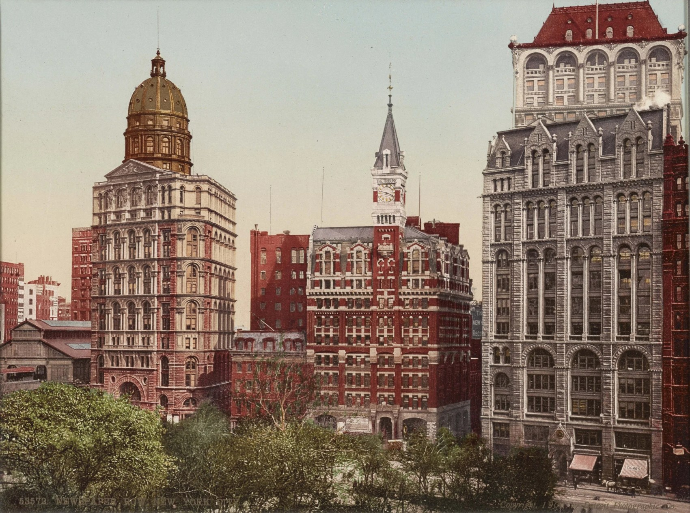

Репортёр
Работает в городе: суд, полиция, встреча со свидетелем, проверка имени и адреса.
Американская журналистика · 1833–1900 / Тема 09
Утром газету покупали на улице, днём её сотрудники собирали городские новости, ночью наборщики готовили новый выпуск. Нью-Йорк XIX века превратил газету в большое предприятие с собственным ритмом, техникой и разделением труда.

В сентябре 1833 года Бенджамин Дей выпустил The Sun, продавая её за один цент, в десять раз дешевле обычных газет. Газета окупалась рекламой и уличной продажей, а не подпиской: мальчишки-газетчики продавали номер на улице. Содержание было приспособлено к рабочему и мелкому торговому читателю: городские происшествия, суд, юмор, человеческие истории.
В 1835 году Джеймс Гордон Беннетт основал The Herald и развил модель. Он ввёл постоянную финансовую колонку, подробные отчёты о преступлениях, включая убийство Хелен Джуитт в 1836 году, и разветвлённую сеть сборщиков новостей. В 1841 году Хорас Грили начал выпускать New-York Tribune, сочетавшую дешёвую цену с моральной и политической программой: аболиционизм, поддержка реформ, трибуна для идей. В 1851 году Генри Реймонд основал The New-York Times, сделав ставку на умеренность и надёжность.
Электрический телеграф Морзе, начавший работать в 1844 году, сделал новость почти мгновенной. В 1846 году, в ходе войны с Мексикой, нью-йоркские газеты создали совместную организацию для сбора и оплаты телеграфных сообщений, из которой развилось информационное агентство Associated Press. Совместное использование дорогой телеграфной связи было экономически выгодным.
Печать тоже изменилась. Ротационная машина Ричарда Гоу (Hoe), появившаяся в середине 1840-х годов, значительно увеличила количество оттисков в час. После Гражданской войны рулонная печать, а в 1886 году линотип Оттмара Мергенталера, впервые применённый газетой New York Tribune, ускорили набор. Газета стала индустриальным продуктом, а редакция вошла в систему фабричного времени: сдача материала по расписанию.
Когда газета стала сложным предприятием, возникло разделение труда. Редактор перестал быть единственным автором, в штате появились отделы городских новостей, финансов, иностранных известий, театра. Главный редактор руководил заданием, а репортёры собирали материал и сдавали его в вечерний срок. Выросла роль ночных редакторов, корректоров и выпускающих.
Труд журналиста стал наёмным. Это усилило конкуренцию, поставило вопрос о гарантиях и привело к появлению профессиональных объединений в конце XIX века. Нью-йоркский образец принимали провинциальные газеты, часто копируя структуру отделов и формат полосы.
Работает в городе: суд, полиция, встреча со свидетелем, проверка имени и адреса.
Работает со временем: объём текста, место на полосе, срочная новость, готовность номера.
Профессия репортёра сформировалась в 1830 – 1840-х годах. Беннетт и его сотрудники ходили в полицейские участки и суды, спрашивали свидетелей, описывали место. В 1859 году Грили взял интервью у Бригама Янга в Солт-Лейк-Сити, и жанр интервью стал частью газетной практики. Во время Гражданской войны газеты отправили на фронты десятки корреспондентов, которых называли "богемной бригадой".
К 1880 – 1890-м годам появился репортёр-исследователь. Нелли Блай (Элизабет Кокрейн) из газеты The World в 1887 году выдала себя за душевнобольную, чтобы описать условия в приюте на острове Блэквелла, а в 1889 – 1890 годах совершила кругосветное путешествие за семьдесят два дня. Джозеф Пулитцер, купивший The World в 1883 году, и Уильям Рэндольф Херст создали стиль "жёлтой прессы": крупные заголовки, иллюстрации, кампании, сенсации.
Фотография в газетах долго не могла печататься в массовом тираже. Читатель видел события на гравюрах. Frank Leslie's Illustrated Newspaper (1855) и Harper's Weekly (1857) нанимали рисовальщиков и гравёров, посылали их на фронт. Томас Наст в Harper's Weekly сделал политическую карикатуру общенациональным жанром, в частности в кампании против нью-йоркской организации Tammany Hall.
В 1880 году нью-йоркская Daily Graphic опубликовала один из первых известных образцов газетной полутоновой фотографии, а к 1890-м годам этот способ позволил публиковать снимки. Постепенно художник-иллюстратор уступил место фотографу, но на рубеже веков оба типа работников существовали параллельно.
Спортивная журналистика началась со специальных изданий, например еженедельника Spirit of the Times (с 1831 года), посвящённого скачкам, охоте и боксу. В 1850 – 1860-х годах Генри Чедвик, писавший о бейсболе для нью-йоркских и бруклинских изданий, ввёл таблицу результатов (box score) и систематическое описание матчей. В 1883 году The World Пулитцера, как обычно считается, создала отдельный спортивный отдел, а позднее такие разделы появились у других крупных газет.
Спортивный журналист сочетал черты репортёра и комментатора: он писал о результате, о людях, о публике. Это формировало новый жанр, где язык отличался быстротой, разговорными оборотами и метафорами. Вместе с экономической подачей и рекламой он помогал удерживать массового читателя.
Дешёвая газета делала ставку на рекламу и широкий круг покупателей. Низкая розничная цена помогала продавать много экземпляров, а растущая аудитория привлекала рекламодателей. Поэтому редакции боролись за внимание новостями города, происшествиями, кампаниями и иллюстрациями.
Пулитцер приобрёл The World в 1883 году. В 1895 году Херст купил New York Journal. Их конкуренция усилила борьбу за тираж и газетную сенсацию. При сравнении тиражных цифр нужно различать ежедневный и воскресный выпуск, фактические продажи и рекламные заявления издателей; один показатель не описывает весь рынок.
Сенсационность вызывала критику: газеты обвиняли в вымысле, вторжении в частную жизнь, давлении на общественное мнение. В ответ в конце XIX века сформировался другой полюс. The New York Times, купленная в 1896 году Адольфом Окс, сделала ставку на достоверность и сдержанность, а позднее профессиональные сообщества и школы журналистики закрепляли стандарты в учебных программах и этических кодексах.
Так противостояние нью-йоркских моделей, массовой сенсационной и информационной серьёзной, определило характер американской журналистики XX века.
Нью-йоркская модель меняла саму профессию. Издание всё меньше зависело от одного автора и всё больше от координации многих работников. Техника ускоряла выпуск, а большой рынок делал каждую минуту редакционного времени частью бизнеса.